Gambar layar memakai data contoh; nama sekolah, guru, dan isi laporan di aplikasi Anda akan berbeda.
Bagian 1Mengenal aplikasi CERMAT
CERMAT terdiri dari dua bagian dalam satu aplikasi. Pustaka Digital CERMAT berisi folder materi program (Silabus, Modul, Bahan Tayang, Lembar Kerja). Laporan CERMAT dipakai untuk menyusun, mengesahkan, dan mengunduh laporan 22 pendampingan. Satu akun dipakai untuk keduanya.
AlamatAlamat aplikasi: https://pusatbelajargurukudus.github.io/cermat/
Bisa dibuka di HP maupun laptop. Akun (username dan password awal) diberikan oleh admin program.
Bisa dibuka di HP maupun laptop. Akun (username dan password awal) diberikan oleh admin program.
Bagian 2Memasang aplikasi di HP dan laptop
Setelah dipasang, CERMAT muncul sebagai ikon di layar utama dan terbuka seperti aplikasi biasa, tanpa perlu mengetik alamat. Memasang tidak lewat Play Store atau App Store dan tidak memakan banyak memori.
HP Android (Google Chrome)
- 1Buka Chrome, ketik alamat pusatbelajargurukudus.github.io/cermat, lalu tunggu halaman terbuka.
- 2Ketuk tombol menu ⋮ (titik tiga) di kanan atas.
- 3Pilih Instal aplikasi. Bila tidak ada, pilih Tambahkan ke layar utama, lalu pilih Instal.
- 4Ketuk Instal. Ikon CERMAT muncul di layar utama. Selanjutnya buka CERMAT dari ikon itu.
1–2. Ketuk ⋮, pilih Instal aplikasi
(atau Tambahkan ke layar utama)
(atau Tambahkan ke layar utama)
BatalInstal
3. Ketuk Instal
4. Buka dari ikon CERMAT
iPhone dan iPad (Safari)
- 1Buka Safari (bukan Chrome), ketik alamat pusatbelajargurukudus.github.io/cermat.
- 2Ketuk tombol Bagikan (kotak dengan panah ke atas) di bilah bawah. Pada iOS versi terbaru, tombol ini ada di menu ••• di sebelah kolom alamat.
- 3Gulir daftar pilihan, lalu ketuk Tambahkan ke Layar Utama.
- 4Ketuk Tambah di kanan atas. Ikon CERMAT muncul di layar utama.
1–2. Buka di Safari, ketuk Bagikan
Salin
Tambahkan ke Daftar Bacaan
Tambahkan Markah
Tambahkan ke Layar Utama ⊞
Cetak
3. Pilih Tambahkan ke Layar Utama
pusatbelajargurukudus.github.io/cermat
4. Ketuk Tambah (kanan atas)
Laptop atau komputer (Chrome / Microsoft Edge)
- 1Buka alamat pusatbelajargurukudus.github.io/cermat di Chrome atau Edge.
- 2Klik ikon instal (gambar layar dengan panah ke bawah) di ujung kanan kolom alamat, lalu klik Instal.
- 3CERMAT terbuka di jendela sendiri dan muncul di menu Start / Launchpad. Tanpa dipasang pun, CERMAT tetap bisa dipakai lewat browser biasa.
TipsBila ikon instal tidak muncul, buka sekali lagi alamat di atas, tunggu beberapa detik, lalu ulangi. Di iPhone, pemasangan hanya bisa lewat Safari.
Bagian 3Masuk (login)
- 1Buka aplikasi CERMAT. Halaman Masuk tampil di bawah kepala halaman biru.
- 2Ketik username dan password dari admin. Ketuk ikon mata untuk melihat password yang Anda ketik, supaya tidak salah huruf.
- 3Ketuk Masuk. Nama Anda tampil di kanan atas (di HP: di bawah judul). Folder yang tampil untuk Anda: yang sudah dipilih admin untuk kepala sekolah.
Login cukup sekali. Selama belum menekan Keluar, aplikasi tetap masuk walau ditutup. Lupa password? Hubungi admin program.


Bagian 4Akun Saya: profil, ganti password, keluar
- 1Ketuk nama Anda di kanan atas (di HP: di bawah judul).
- 2Bagian Profil: isi atau perbaiki NIP, lalu ketuk Simpan profil. NIP ini tercetak di Lembar Pengesahan laporan. Nama lengkap hanya bisa diubah admin.
- 3Bagian Ganti password: isi password lama, password baru (minimal 6 karakter), dan ulangi password baru. Ketuk Ganti password.
- 4Untuk keluar dari akun, ketuk Keluar. Lakukan ini bila memakai HP atau laptop milik orang lain.
PentingSegera ganti password awal setelah login pertama. Setelah password diganti, perangkat lain yang memakai akun Anda perlu masuk lagi.

Bagian 5Halaman utama Kepala Sekolah
- 1Setelah masuk, tampil kartu Pengesahan Laporan dan folder materi yang disediakan untuk kepala sekolah, misalnya Modul dan Lembar Kerja.
- 2Ketuk kartu folder: isi folder tampil di dalam CERMAT, dikelompokkan per pendampingan. Ketuk file untuk membukanya. Materi pendampingan yang belum ditampilkan fasilitator masih terkunci.
- 3Ketuk Pengesahan Laporan untuk memeriksa dan mengesahkan laporan pendampingan sekolah Anda.
- 4Ketuk Perolehan Bintang untuk melihat bintang reward setiap guru (lihat Bagian 9).
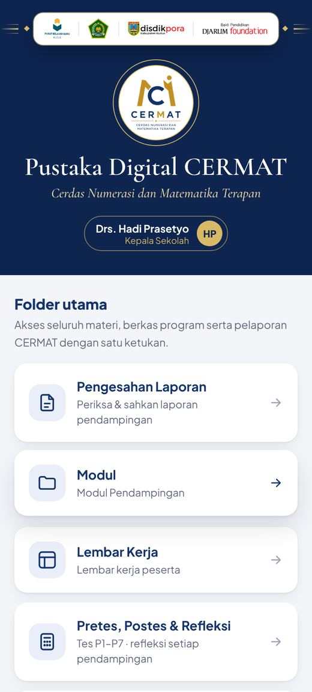
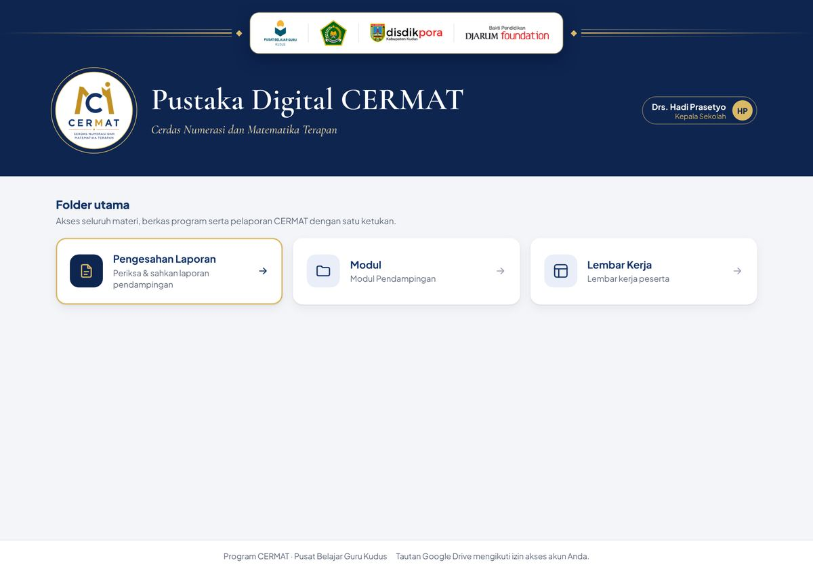
Bagian 6Daftar laporan yang perlu disahkan
- 1Menu Pengesahan berisi tiga kelompok: Menunggu pengesahan Anda, Menunggu pengesahan fasilitator, dan Sudah disahkan.
- 2Laporan baru masuk ke "Menunggu pengesahan Anda" setelah kedua fasilitator mengesahkannya.
- 3Ketuk kartu laporan untuk membukanya.
Menu lain: Laporan Sekolah (semua 22 pendampingan, hanya baca), Unduh Laporan, dan Total Reward (bintang peserta sekolah Anda).
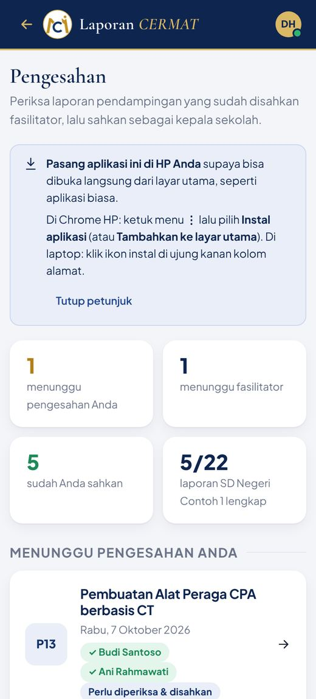
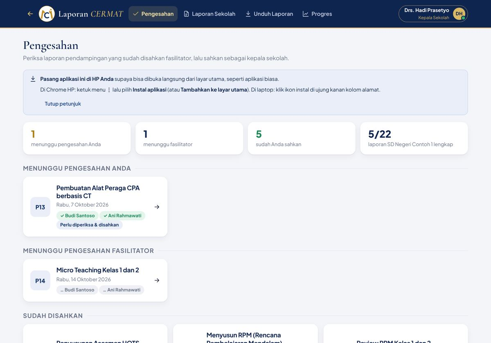
Bagian 7Memeriksa dan mengesahkan laporan
- 1Laporan terbuka dengan kotak Pengesahan dan pratinjau PDF. Gulir untuk membaca semua halaman; ketuk + / − untuk memperbesar.
- 2Periksa isi laporan: tanggal, peserta hadir, nilai, evaluasi, dan foto.
- 3Bila sudah sesuai, ketuk Sahkan sebagai Kepala Sekolah.
- 4Kode QR pengesahan Anda langsung tercetak di Lembar Pengesahan dan Jurnal Kegiatan. Tombol Unduh PDF muncul.
Periksa duluPengesahan tidak bisa ditarik oleh kepala sekolah. Bila ada yang perlu diperbaiki, sampaikan ke fasilitator sebelum mengesahkan.
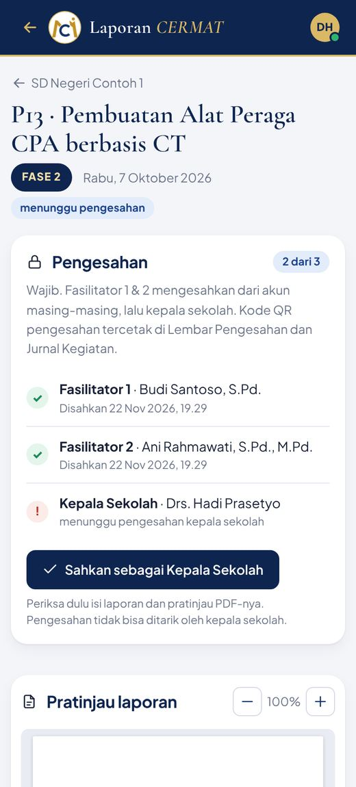
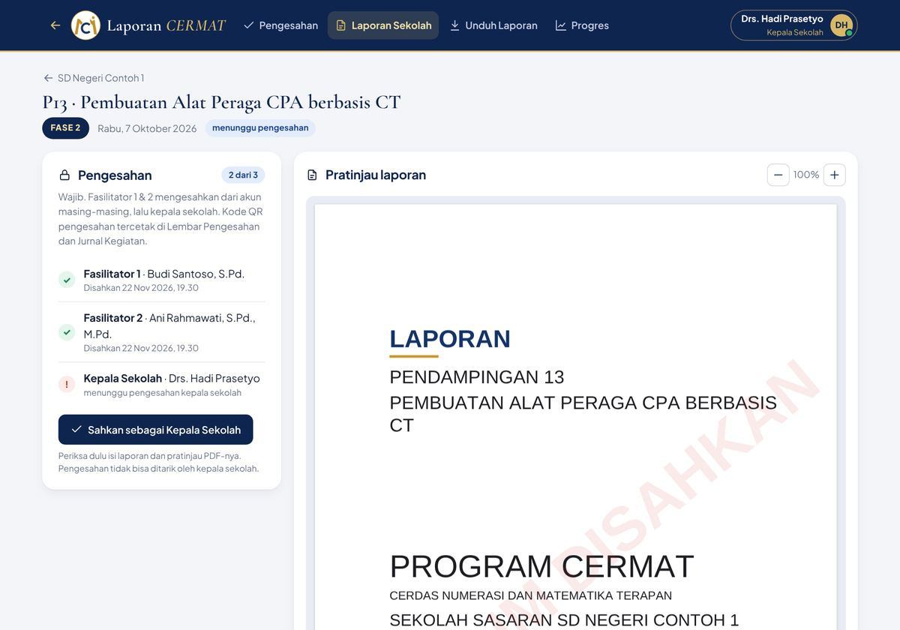
Bagian 8Mengerjakan pretes, postes & refleksi

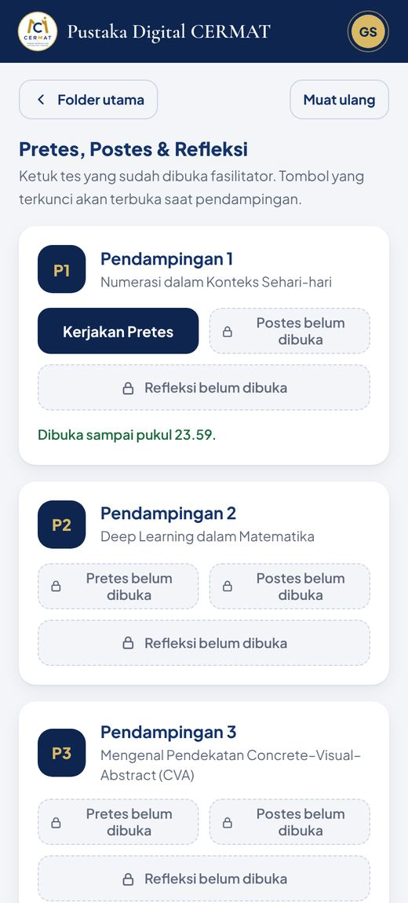
- 1Di halaman utama, ketuk kartu Pretes, Postes & Refleksi. Tampil kartu setiap pendampingan.
- 2Tombol tes terkunci (belum dibuka) sampai fasilitator mengaktifkannya saat pendampingan. Halaman memeriksa sendiri setiap 30 detik; bisa juga ketuk Muat ulang.
- 3Setelah dibuka, ketuk Kerjakan Pretes atau Kerjakan Postes. Google Form terbuka dengan nama Anda, jabatan, jenis tes, dan asal sekolah sudah terisi.
- 4Jawab soal, lalu kirim. Tes tertutup kembali saat fasilitator menutupnya atau pukul 23.59.
- 5Refleksi terbuka bersamaan dengan postes. Ketuk Isi Refleksi; setelah mengerjakan postes, saat kembali ke CERMAT muncul tawaran Isi refleksi sekarang.
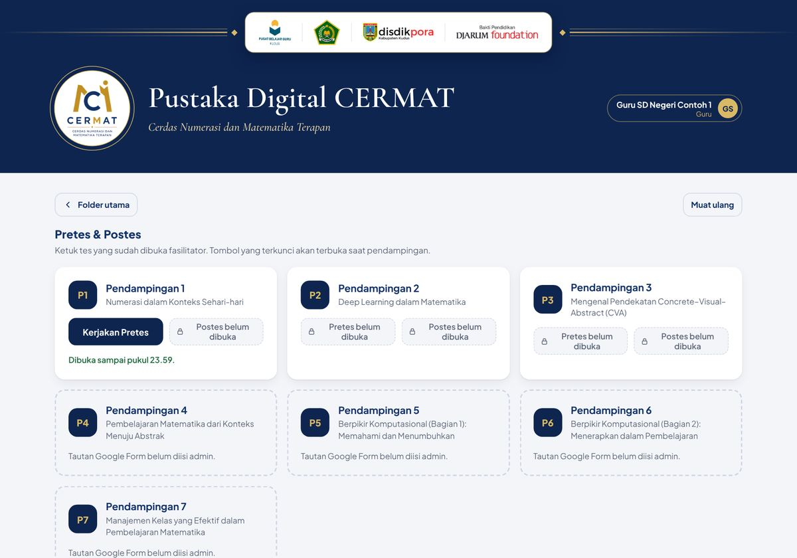
Bagian 9Perolehan Bintang
- 1Di halaman utama, ketuk kartu Perolehan Bintang.
- 2Tampil tabel semua guru sekolah Anda: peringkat, nama, total bintang, lalu bintang di setiap pendampingan (P1, P2, dan seterusnya).
- 3Urutan dari total terbanyak. Guru dengan total sama mendapat nomor peringkat yang sama. Nomor tidak melompat (1, 1, 2, 3, …). Peringkat 1–3 diberi warna emas, perak, dan perunggu.
- 4Tanda – berarti tidak hadir di pendampingan itu. Kolom bertanda * berarti laporannya belum disahkan, jadi angkanya masih bisa berubah.
- 5Ketik sebagian nama di kotak Cari nama untuk mencari guru tertentu. Ketuk Muat ulang untuk data terbaru.
Bintang diisi fasilitator di laporan pendampingan. Bila ada angka yang keliru, sampaikan ke fasilitator.
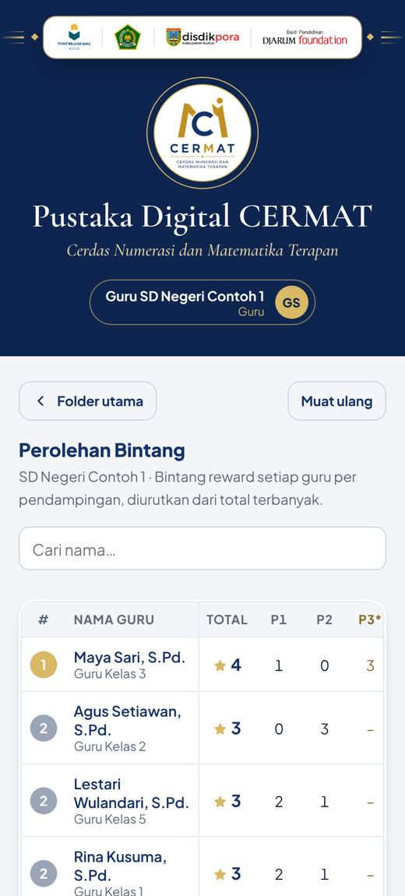
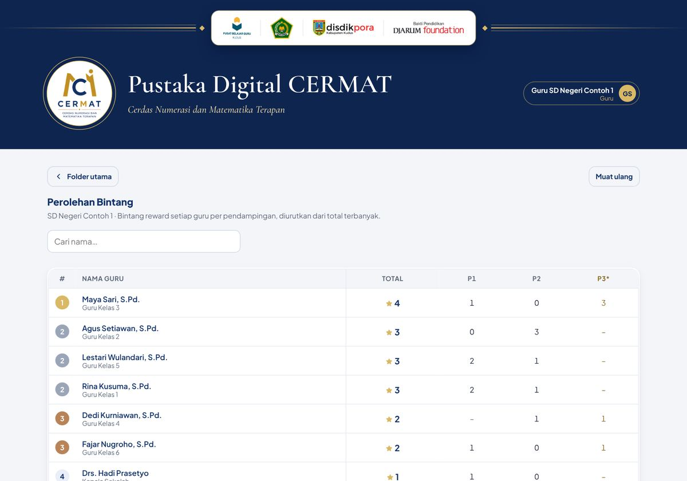
Bagian 10Laporan yang sudah disahkan
- 1Laporan yang sudah disahkan ketiga pihak berlabel disahkan, tanpa tanda air.
- 2Ketuk Unduh PDF untuk menyimpan file laporannya.
- 3Kode QR di PDF bisa dipindai dengan kamera HP. Halaman verifikasi menunjukkan siapa yang mengesahkan dan kapan.
Bila fasilitator mengubah laporan setelah disahkan, semua pengesahan otomatis batal dan laporan kembali ke daftar "Menunggu pengesahan". Ini menjaga agar QR selalu sesuai isi terakhir.
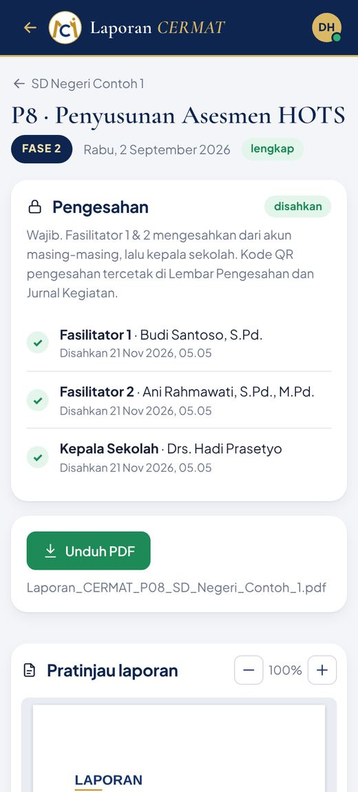
BantuanBila ada kendala
| Lupa password | Hubungi admin program. Admin akan memberi password baru; setelah masuk, segera ganti lewat Akun Saya. |
|---|---|
| Pratinjau laporan tidak muncul | Periksa sinyal internet, lalu muat ulang halaman. Pratinjau disusun langsung di perangkat, jadi butuh beberapa detik. |
| Tampilan belum berubah setelah ada pembaruan | Tutup aplikasi sepenuhnya, lalu buka lagi. Bila belum berubah, ulangi sekali lagi. |
| Folder tidak bisa dibuka / diminta izin | Folder Google Drive mengikuti izin akses. Pastikan Anda memakai akun Google yang sudah diberi akses, atau hubungi admin. |